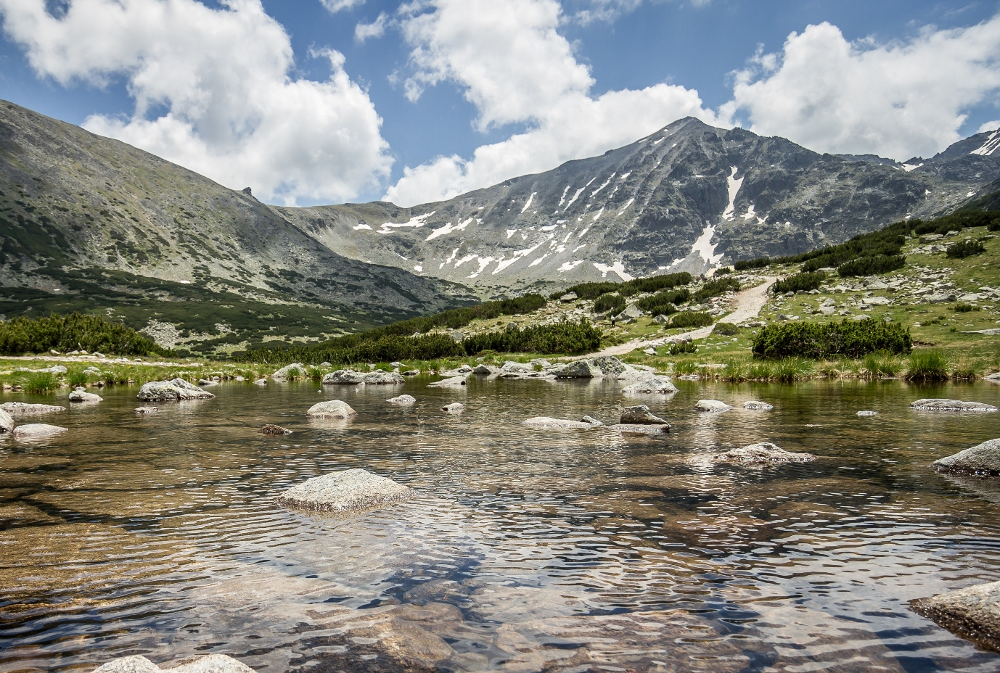
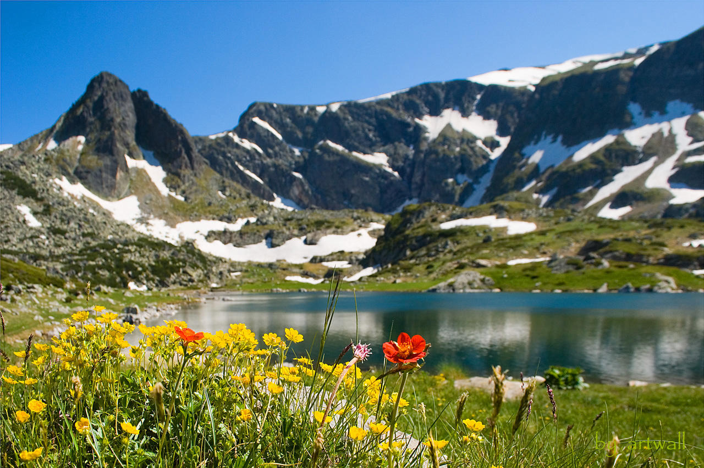
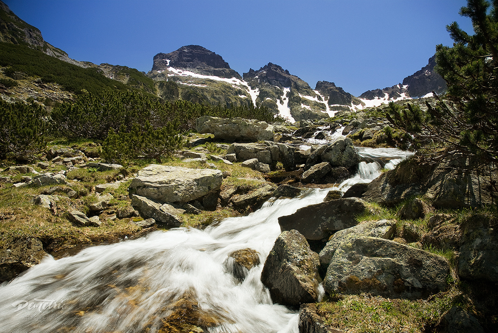
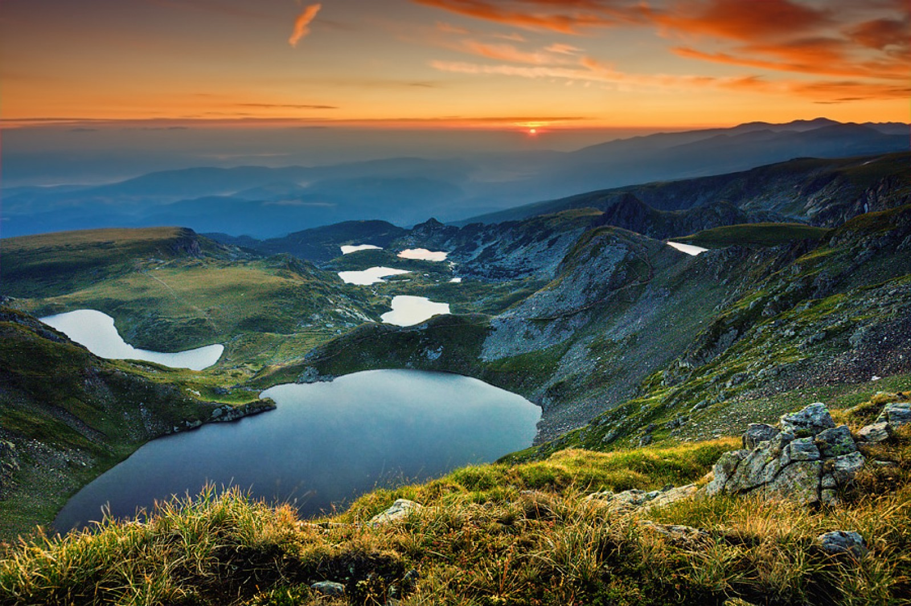
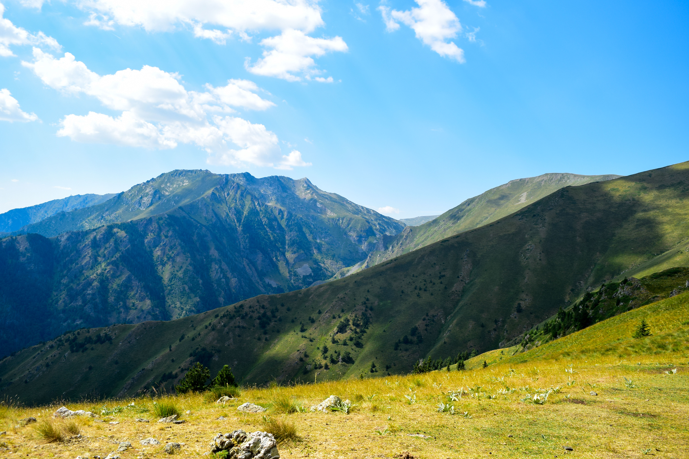

Рила
Рила е най-високата планина в България и на целия Балкански полуостров (с най-висок връхМусала -надморска височина 2925 м). Най-старото име на планината е Доункас, дадено и от траките. Означава място с много вода. Тракийско е и другото и име - Роула, което славяните видоизменят на Рила. То също е свързано с многоводието на планината (означава “водна планина”). Това название не е случайно. В Рила има около 200 езера и множество минерални извори. От тук извират едни от най – пълноводните и дълги реки на Балканите (Искър, Марица, Места и др.).
Издига се в Югозападна България, между Благоевградската и Дупнишката котловина — от запад, Самоковската и Костенецко-Долнобанската котловина — от север, и Разложката котловина — от юг. На запад долините на Струма и левият є приток р. Джерман я разделят от пл. Влахина и Осоговската планина; на север Клисурската и Боровецката седловина я свързват с планините Верила и Ихтиманска Средна гора, на изток Аврамовата седловина с Родопите, на юг седловината Предел — с Пирин.
Въз основа на орографската й структура и на характерни морфографски белези Рила се дели на 4 главни дяла - Източна, Средна, Северозападна и Югозападна.

Източна Рила — ограничава се от долината на р. Бели Искър, седловината Горни куки, долините на Вапска река и Белишка река — от запад, долините на Места и р.Дрещенец, Аврамова седловина и седловината Юндола от юг, долините на Юндолска река и р.Яденица — от изток, долината на Марица и Боровецката седловина — от север. Най-големият по площ (37 % от площта на Рила) и най-високо издигнатият (Мусала) дял. В него се очертават 2 обширни и високи била — Мусаленското и Ибърското, които се пресичат при Маришкия връх. Мусаленското било се разделя на Мусаленски дял, Маришки дял и Ковачки дял; Ибърското било — на Славоввръшки, Белмекенски, Ибърски и Заврачишки дял (Мустачалски дял). По най-високите части на Мусаленското и Ибърското било минава гл. вододел на Балканския полуостров.
Среднa Рила — ограничава се от долините на реките Рилска река и Леви Искър — от запад, Черни Искър — от север, Бели Искър — от изток, Илийна река — от юг. Заема само 9 % от площта на Рила, но релефът й е с най-силно подчертан алпийски облик и има най-голяма средна надморска висисочина 2077 м. Долината на Рилска река разделя Средна Рила на 2 главни била — Скакавишко и Рилецко, които пресичат се при вр. Канарата.

Северозападнa Рила — ограничава се от долините на Струма и Джерман — от запад, Клисурската седловина — от север, долините на Леви Искър от изток, и Рилска река —от юг. Заема 24 % от общата площ на Рила Най-висок е вр. Голям Купен (надморска височина 2731 м).
Югозападнa Рила — ограничава се от долините на Струма — от запад, Рилска река и Илийна река — от север, Белишка река — от изток, Градевска река и р. Еловица — от юг. Заема 30 % от площта на Рила; най-ниският рилски дял (средна надморска височина 1306 м).